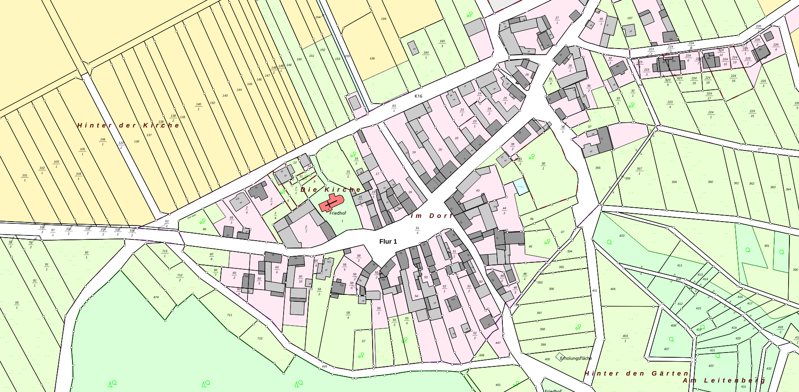

Alle hier vorgestellten QGIS-Erweiterungen sind über das QGIS-Plugins-Repository aus QGIS heraus installierbar. Die Auswahl der vorgestellten Plugins erfolgt aufgrund dessen, dass sie deutsche Vorlieben oder Standards umsetzen. Wenn Sie der Meinung sind, dass ein Plugin fehlt, melden Sie sich bei uns.

QGIS-Erweiterung zur ALKIS-Einbindung
Funktion:
QGIS-Erweiterung zur Flurstückssuche in einer PostNAS-Datenbank
Die Grundidee des Plugins ist es, ein einziges Suchfeld zu haben, so wie es die Nutzer von Internetsuchmaschinen her kennen.